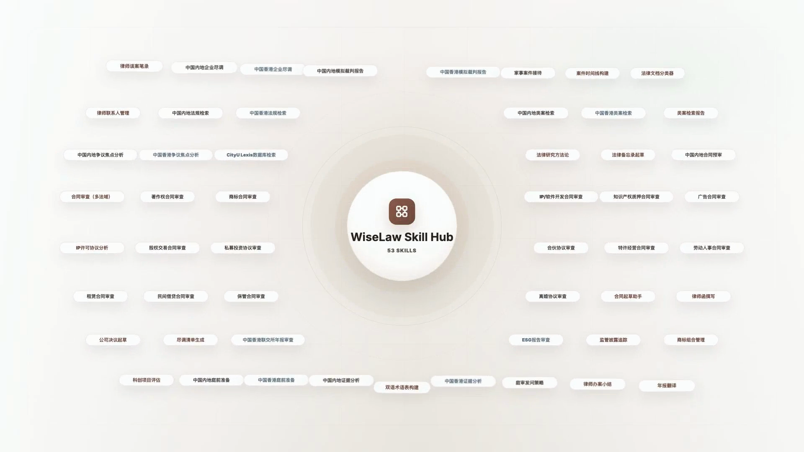

Lawrence 分镜关键帧
用于快速核对每个已纳入分镜的视觉状态；S7 和 S8 使用合并版 S7&S8。
视频预览
Shot 3 · 身份与定位
shots/shot-03.html
Shot 4 · 飞书下任务
shots/shot-04.html
Shot 5 · 后台执行
shots/shot-05.html
Shot 6 · 数字工位
shots/shot-06.html
Shot 7&8 · 能力快闪
shots/shot-07-08.html

Shot 9&10 · 合规与 Skill Hub
shots/shot-09-10.html
Shot 11&12 · 安全与主权
shots/shot-11-12.html
Shot 13 · 课程与陪跑
shots/shot-13.html